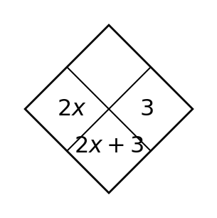
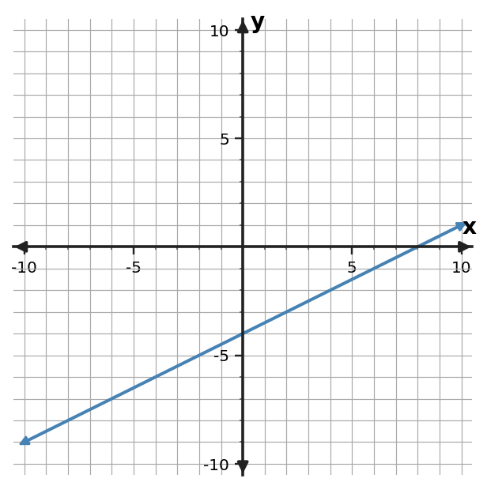
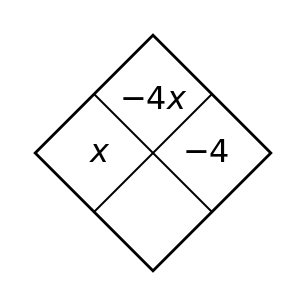
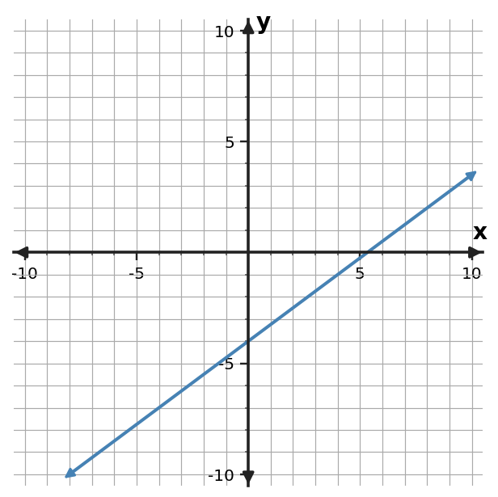
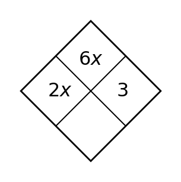
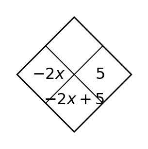
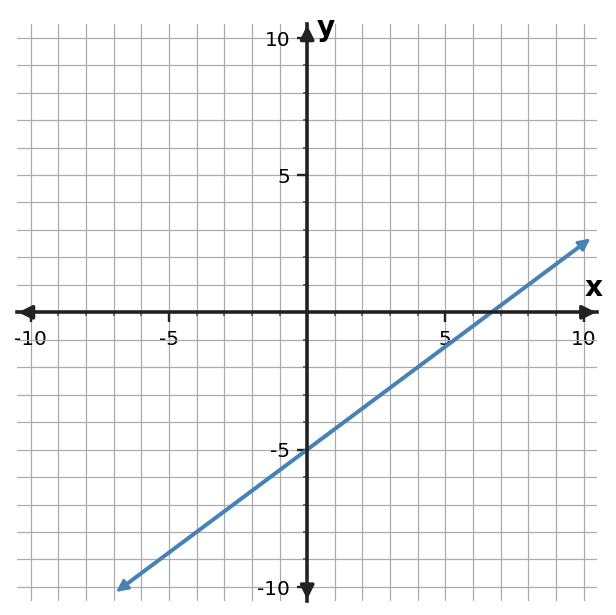
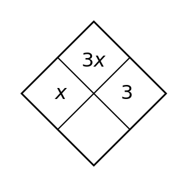
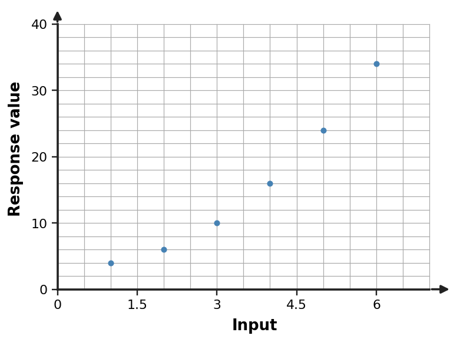

1
Use the Diamond rule (top = product, bottom = sum). Complete the missing top expression.

Use the Diamond rule (top = product, bottom = sum). Complete the missing top expression.

The rule is $y=-2x+2$. Complete the input-output values and name one ordered pair generated by the rule.
| $x$ | $y$ |
|---|---|
| $-2$ | $6$ |
| $0$ | $2$ |
| $3$ | $-4$ |
The rule is $y=-2x-4$. Complete the input-output values and name one ordered pair generated by the rule.
| $x$ | $y$ |
|---|---|
| $-2$ | $0$ |
| $0$ | $-4$ |
| $3$ | $-10$ |
The rule is $y=4x-2$. Complete the input-output values and name one ordered pair generated by the rule.
| $x$ | $y$ |
|---|---|
| $-2$ | $-10$ |
| $0$ | $-2$ |
| $3$ | $10$ |
Find the slope of the line through $(2,5)$ and $(5,8)$.
Use the table to determine the constant rate of change in $y$ per 1 unit of $x$.
| $x$ | $y$ |
|---|---|
| $-2$ | $5$ |
| $0$ | $3$ |
| $2$ | $1$ |
| $4$ | $-1$ |
The rule is $y=-4x-1$. Complete the input-output values and name one ordered pair generated by the rule.
| $x$ | $y$ |
|---|---|
| $-2$ | $7$ |
| $0$ | $-1$ |
| $3$ | $-13$ |
Determine whether the table shows a constant rate of change. If it does, state the rate.
| $x$ | $y$ |
|---|---|
| $0$ | $-1$ |
| $1$ | $3$ |
| $2$ | $7$ |
| $3$ | $11$ |
Determine the slope of the line shown. Use two grid points to support your calculation.

The rule is $y=-3x+2$. Complete the input-output values and name one ordered pair generated by the rule.
| $x$ | $y$ |
|---|---|
| $-2$ | $8$ |
| $0$ | $2$ |
| $3$ | $-7$ |
Determine whether the table shows a constant rate of change. If it does, state the rate.
| $x$ | $y$ |
|---|---|
| $0$ | $8$ |
| $2$ | $4$ |
| $4$ | $0$ |
| $6$ | $-4$ |
Determine whether the table shows a constant rate of change. If it does, state the rate.
| $x$ | $y$ |
|---|---|
| $0$ | $1$ |
| $3$ | $-8$ |
| $6$ | $-17$ |
| $9$ | $-26$ |
Use the Diamond rule (top = product, bottom = sum). Complete the missing bottom expression.

For $y=\frac{3}{2}x-8$, create a three-row input-output table for $x=-1,1,3$.
For $y=-\frac{1}{2}x+8$, create a three-row input-output table for $x=-1,1,3$.
For $y=-4x-4$, create a three-row input-output table for $x=-1,1,3$.
Graph $y=-2x+7$. Mark the $y$-intercept and at least one additional point that shows the slope.
Use the graph to identify the $y$-intercept and describe whether the function is increasing or decreasing.

For $y=-2x-6$, create a three-row input-output table for $x=-1,1,3$.
Plot the point $(-2,-9)$ on a coordinate plane and identify its quadrant.
Plot the ordered pairs from the table and draw the linear function through them. Then state its slope and $y$-intercept.
| $x$ | $y$ |
|---|---|
| $-2$ | $12$ |
| $0$ | $4$ |
| $2$ | $-4$ |
| $4$ | $-12$ |
For $y=-x-1$, create a three-row input-output table for $x=-1,1,3$.
Plot the point $(3,-11)$ on a coordinate plane and identify its quadrant.
Plot the point $(-11,-7)$ on a coordinate plane and identify its quadrant.
Use the Diamond rule (top = product, bottom = sum). Complete the missing bottom expression.

Rewrite $2(x-1)$ as an equivalent expression, then verify equivalence at $x=3$.
Rewrite $3(x+2)$ as an equivalent expression, then verify equivalence at $x=-2$.
Rewrite $4(x-4)$ as an equivalent expression, then verify equivalence at $x=-1$.
Write a linear equation in slope-intercept form for the line through $(-1,-1)$ and $(2,-7)$.
Write an equation in slope-intercept form for the relationship in the table.
| $x$ | $y$ |
|---|---|
| $-2$ | $-9$ |
| $0$ | $-1$ |
| $2$ | $7$ |
| $4$ | $15$ |
Rewrite $-3(x-7)$ as an equivalent expression, then verify equivalence at $x=5$.
Write a linear equation for the table and state the slope and starting value.
| $x$ | $y$ |
|---|---|
| $0$ | $8$ |
| $2$ | $12$ |
| $4$ | $16$ |
Write an equation in slope-intercept form for the graphed line. Use graph features as evidence.

Rewrite $5(x-1)$ as an equivalent expression, then verify equivalence at $x=3$.
Write a linear equation for the table and state the slope and starting value.
| $x$ | $y$ |
|---|---|
| $0$ | $-2$ |
| $2$ | $-4$ |
| $4$ | $-6$ |
Write a linear equation for the table and state the slope and starting value.
| $x$ | $y$ |
|---|---|
| $0$ | $-8$ |
| $2$ | $0$ |
| $4$ | $8$ |
Use the Diamond rule (top = product, bottom = sum). Complete the missing top expression.

A relationship is represented by $y=x^2-4$. Identify its function family and give one feature that supports your choice.
A relationship is represented by $y=x$. Identify its function family and give one feature that supports your choice.
A relationship is represented by $y=x+2$. Identify its function family and give one feature that supports your choice.
Relationship A is $y=3x-8$. Relationship B is shown in the table. Compare their rates of change and starting values.
| $x$ | $B: y$ |
|---|---|
| $0$ | $3$ |
| $2$ | $11$ |
| $4$ | $19$ |
The graphed line is Relationship A. Relationship C is $y=2x+1$. Which has the greater rate of change? Compare their starting values as well.

A relationship is represented by $y=|x-2|+2$. Identify its function family and give one feature that supports your choice.
Using rate and starting value, compare Relationship A, $y=-2x$, with Relationship B, $y=-3x-2$, and state one conclusion supported by those two models.
Compare the two linear relationships. Use rate and starting value rather than the size of one displayed output.
| $A: x$ | $A: y$ |
|---|---|
| $0$ | $0$ |
| $2$ | $-4$ |
| $4$ | $-8$ |
| $B: x$ | $B: y$ |
|---|---|
| $0$ | $4$ |
| $2$ | $8$ |
| $4$ | $12$ |
A relationship is represented by $y=x^2-1$. Identify its function family and give one feature that supports your choice.
Using rate and starting value, compare Relationship A, $y=x-1$, with Relationship B, $y=4x+6$, and state one conclusion supported by those two models.
Using rate and starting value, compare Relationship A, $y=-x+8$, with Relationship B, $y=4x+7$, and state one conclusion supported by those two models.
Use the Diamond rule (top = product, bottom = sum). Complete the missing bottom expression.

A candle is 30 centimeters tall and burns down 2 centimeters each hour. Let $h$ be hours and $H$ be height. Write an equation that models the situation.
A parking garage charges a 31-dollar entry fee plus 5 dollars per hour. Let $h$ be hours and $C$ be cost. Write an equation that models the situation.
A student starts with 73 dollars and saves 7 dollars each week. Let $w$ be weeks and $S$ be savings. Write an equation that models the situation.
Describe the trend in the scatter plot and decide whether a linear model is reasonable for the displayed data. Support your decision with the pattern of points.

A linear model is $y=4x+7$. Use the model to predict $y$ when $x=5$ and interpret the result as a model prediction rather than an exact observed value.
A parking garage charges a 32-dollar entry fee plus 5 dollars per hour. Let $h$ be hours and $C$ be cost. Write an equation that models the situation.
A pattern follows the rule $y=-4x-4$. Find the output for $x=8$ and give the ordered pair.
A model for a subscription total is $C=-12m+194$, where $m$ is months and $C$ is dollars. Interpret both the slope and intercept in context.
A tank starts with 36 liters and drains 4 liters each minute. Let $t$ be minutes and $V$ be volume. Write an equation that models the situation.
A pattern follows the rule $y=4x-7$. Find the output for $x=8$ and give the ordered pair.
A pattern follows the rule $y=4x+2$. Find the output for $x=9$ and give the ordered pair.